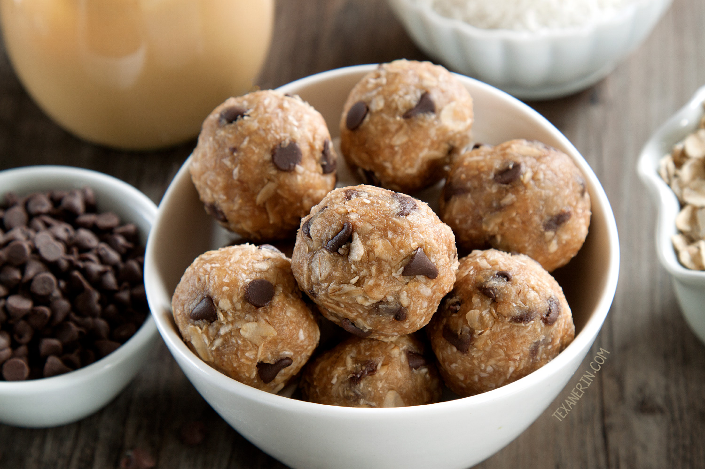

Peanut Butter Protein Balls
Nutritional Facts (per serving)
Calories 167 | Total Fat 12g | Saturated Fat 6g | Carbohydrates 5g | Fibre 2g | Protein 10g
Serves: 16
Ingredients
- 3/4 cup natural peanut butter
- 1/2 cup vanilla protein powder
- 1 teaspoon vanilla extract
- 1/2 cup shredded coconut
- 1/4 cup slivered almonds
Method
Step 1: Place all the ingredients into a bowl and mix together to combine.
Step 2: Next get your hands dirty and roll the balls into 1/2" (1.5 cm bite sized balls) - makes about 15 balls.
Step 3: Place them into a container as you go and store them in the fridge. These will keep for months like this - but I hope you'll eat them before then!